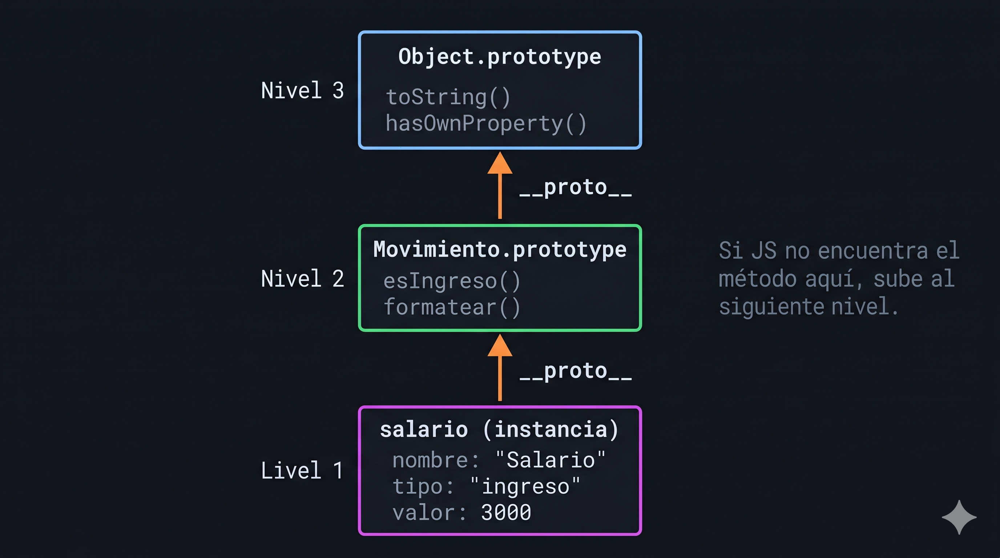

Métodos compartidos en .prototype, herencia con Object.create() y el puente a la sintaxis class
Cuando llamas un método, JavaScript lo busca primero en el objeto, luego en su prototipo, y así hacia arriba hasta Object.prototype.

Los métodos en el constructor se duplican en cada instancia. Los métodos en el prototipo son compartidos — una sola copia en memoria.
function Movimiento(n,t,v) {
this.nombre = n;
this.esIngreso = function() {
return this.tipo === "ingreso";
};
// ← copia nueva en cada instancia
}function Movimiento(n,t,v) {
this.nombre = n;
}
Movimiento.prototype.esIngreso =
function() {
return this.tipo === "ingreso";
};
// ← compartida por todas las instanciasObject.create() establece el prototipo de un subtipo. call(this) reutiliza el constructor padre.
function Ingreso(nombre, valor, fuente) {
Movimiento.call(this, nombre, "ingreso", valor); // llama al padre
this.fuente = fuente;
}
Ingreso.prototype = Object.create(Movimiento.prototype); // hereda
Ingreso.prototype.constructor = Ingreso; // restaura ref
Ingreso.prototype.esFijo = function() {
return ["salario", "pension"].includes(this.fuente);
};
const s = new Ingreso("Salario", 3000, "salario");
s instanceof Movimiento; // → true
s instanceof Ingreso; // → trueclassLa sintaxis class de ES6 no cambia el mecanismo — JavaScript sigue usando prototipos por debajo. Solo es más legible.
// Lo que escribiste en M2
function Movimiento(nombre, tipo, valor) { this.nombre = nombre; }
Movimiento.prototype.formatear = function() { return this.nombre; };
// Lo que escribirás en M4 — mismo mecanismo, otra sintaxis
class Movimiento {
constructor(nombre, tipo, valor) { this.nombre = nombre; }
formatear() { return this.nombre; } // va al .prototype automáticamente
}this específico. Permite reutilizar el constructor padre.